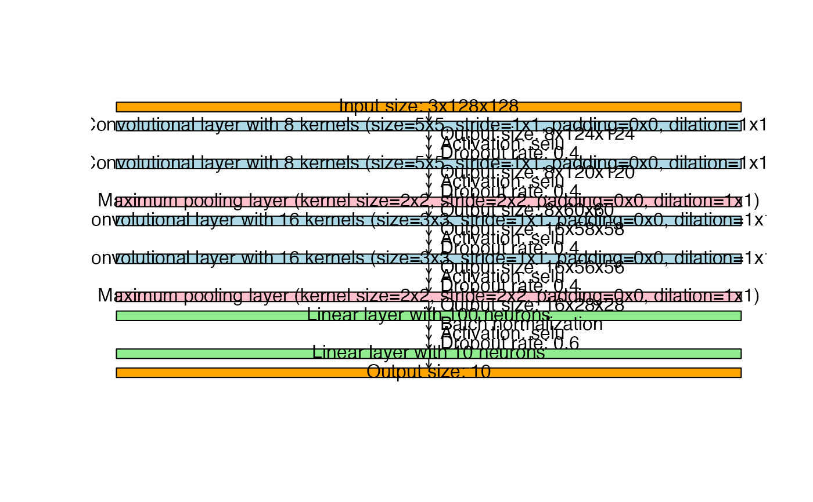

This method provides a visual representation of the network architecture defined by an object of class citoarchitecture, including information about each layer's configuration. It helps in understanding the structure of the architecture defined by create_architecture.
Usage
# S3 method for class 'citoarchitecture'
plot(x, input_shape, output_shape = NULL, ...)Arguments
- x
An object of class
citoarchitecture, created bycreate_architecture.- input_shape
A numeric vector specifying the dimensions of a single sample (e.g.,
c(3, 28, 28)for an RGB image with height and width of 28 pixels). This argument is required for a detailed output.- output_shape
An integer specifying the number of nodes in the output layer. If
NULL, no output layer is printed.- ...
Additional arguments (currently not used).
Examples
# \donttest{
if(torch::torch_is_installed()){
library(cito)
c1 <- conv(n_kernels = 8, kernel_size = 5)
c2 <- conv(n_kernels = 16, kernel_size = 3)
l <- linear(n_neurons = 100)
mP <- maxPool(kernel_size = 2)
architecture <- create_architecture(c1, c1, mP, c2, c2, mP, l,
default_dropout = list(linear=0.6, conv=0.4),
default_normalization = list(linear=TRUE),
default_activation = "selu")
# See how the finished CNN would look like for specific input and output shapes
plot(architecture, c(3,128,128), 10)
}

# }